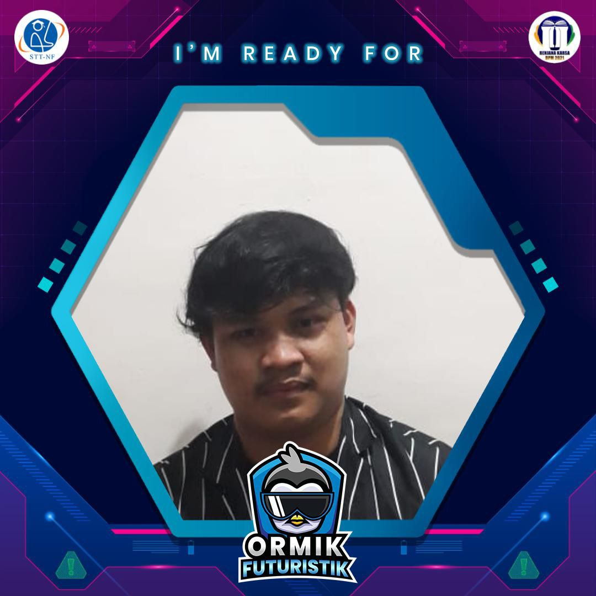
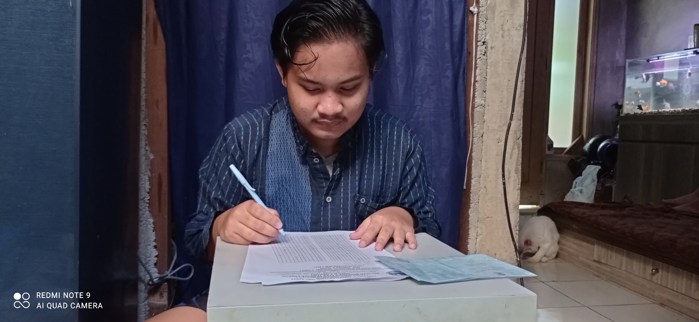
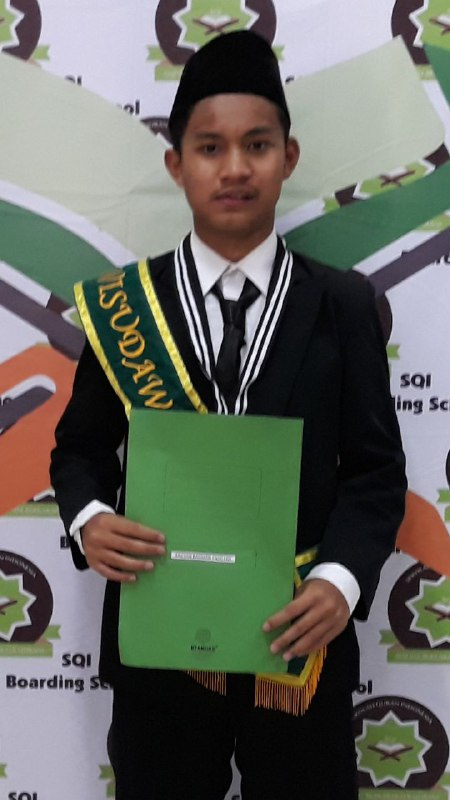
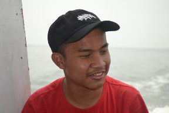
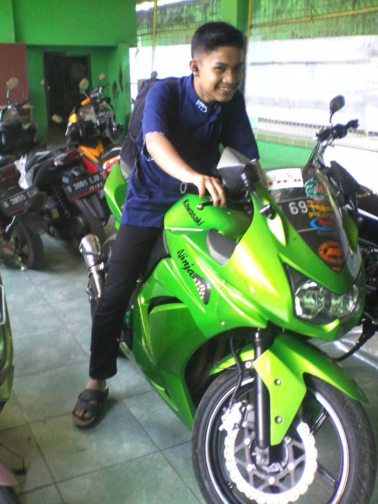

I4F - Directory Profile Page

Fauzan Rahman Fadhillah
Jl.pekapuran
Gg.setya bhakti no.21
Curug, cimanggis, Depok, Jawa Barat
Email: fauzanradhil@gmail.com
Telephone: 081280766404
Catagories
Tentang Saya
Kegiatan
Utama
Prestasi
Perkenalkan Nama saya Fauzan Rahman Fadhillah biasa di panggil Fauzan,saya lahir di Jakarta,17 Februari 2003, Pada saat ini saya tinggal di Jl.pekapuran Gg.setya bhakti curug cimanggis,Depok.Kegiatan saya saat ini berkuliah S1 di STT Terpadu Nurul Fikri mengambil jurusan Teknik Informatika,Saya anak ke 2 dari 3 bersaudara
Saya mengawali pendidikan di SDIT Al-Kamil Depok. Lalu saya melanjutak ke SMP di Sekolah Qur'an Indonesia di Megamendung Bogor dan saya melanjutkan SMA di SMAN Terbuka Depok, dan saat ini saya berkuliah di STT TErpadu nurul Fikri semester 1
Saya memilih jurusan Teknik Informatika karena saya sangat tertarik untuk mempelajari ilmu-ilmu komputer dan saya juga bercita-cita menjadi seorang programmer dan menjadi developer game,mengenai hobi saya sangat suka sekali bermain futsal,bermain game,menonton youtube,dan belakangan ini saya suka mengoprek laptop,ketika saya sudah mendapatkan ilmu tentang komputer saya ingin berbagi ilmu tersebut kepada orang-orang yang masih belum memahaminya
   
Attachment
Tugas B.indo
Kisah Nabi
Portofolio Fauzan